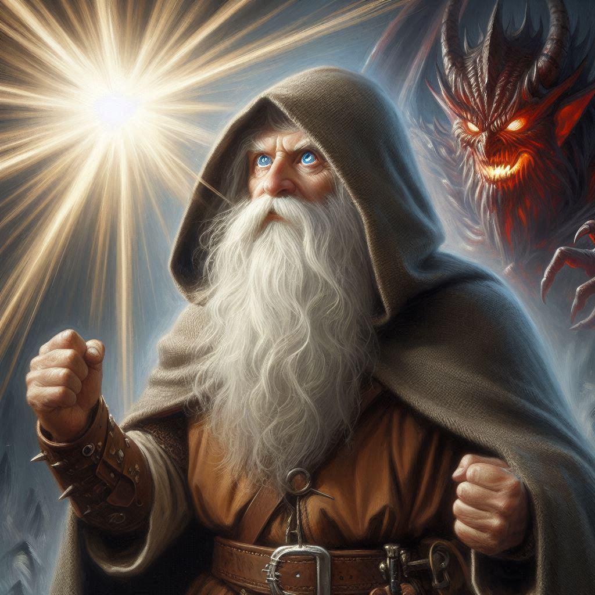
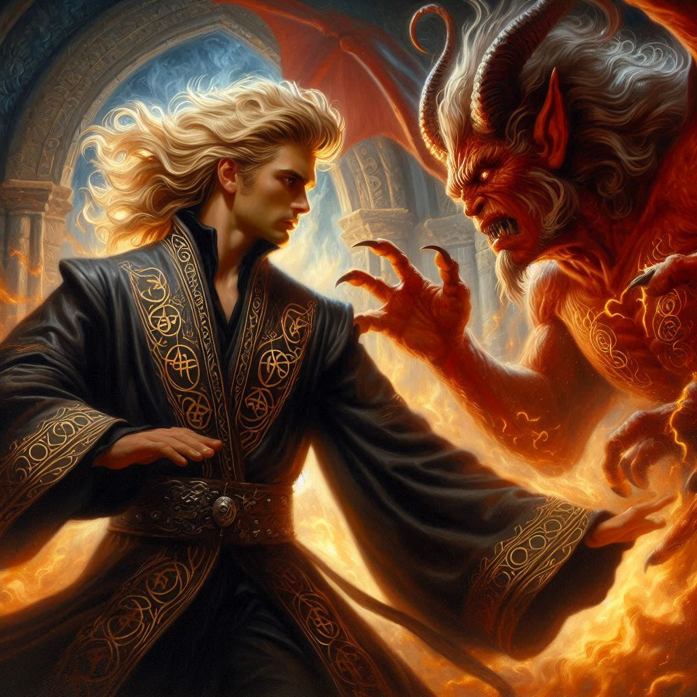

A Broken Vow
You stand before Jorsh, your heart hammering in your chest as the vortex to the Realm of Shadows howls around you. Darkness presses in on all sides, and the air crackles with Yaldaboath’s malevolent energy. You had hoped, maybe foolishly, that together you and Jorsh could defeat the demon lord. But now, with Jorsh beside you, his hands blazing with dark magic, the truth becomes all too clear. The power he seeks is consuming him. His eyes—once full of warmth, now burn with a dangerous ambition.
“Help me, Kira,” Jorsh says, his voice soft, pleading. “Together we can wield the power of Yaldaboath and free this world from corruption. We could be unstoppable.”
For a fleeting moment, your heart wavers. You once loved him. Perhaps you still do, despite everything. But your instincts scream otherwise. You glance past Jorsh, toward the temple altar, where Onyx lies bound in chains, the elder dwarf’s face twisted in agony. Yaldaboath looms above him, an immense, nightmarish figure of writhing shadows, eyes like molten fire.
No, you realize. This isn’t about power or vengeance anymore. It’s about survival—and something far greater than yourself. You make your decision.
“I’m sorry, Jorsh,” you say, stepping back. His eyes widen in shock, and for a moment, you see the boy you once knew—the one you shared stories and dreams with under the moonlit skies of Belladonna. But that boy is long gone, and this version of Jorsh, twisted by hatred and ambition, is too far lost.
Without another word, you turn and sprint toward the altar. The air grows colder with each step, as though the very life force of the cavern is being siphoned into Yaldaboath’s gaping maw. Behind you, you hear Jorsh scream your name, his voice breaking as you leave him behind.
Onyx’s eyes flicker open as you reach him. His voice is hoarse. “You shouldn’t have come for me, lass. It’s too late.”
“Not yet,” you whisper, your hands fumbling with the chains that bind him. They’re etched with strange runes, pulsing with the same dark energy that courses through the cavern. You know time is running out. Every second you spend here is another second Yaldaboath inches closer to his full strength.
“Hold on, Onyx. I won’t leave you.”
As you work, the monstrous form of Yaldaboath shifts, his gaze turning away from Jorsh and locking onto you. His shadowy limbs stretch and grow, filling the space with an oppressive weight. You can feel the heat of his presence on your skin, burning like fire. Then, with a terrible, bone-rattling roar, Yaldaboath strikes.
You throw yourself to the ground just as one of Yaldaboath’s shadowy appendages slams into the altar where you stood seconds before, shattering the stone with ease. The force of the blow sends you tumbling, and you gasp, struggling to catch your breath. But there’s no time to think. Jorsh, screaming in defiance, hurls himself at Yaldaboath, his magic clashing with the demon’s immense power. For a moment, they fight—Jorsh’s spells slicing into the demon’s darkness—but it’s clear that Yaldaboath is too strong.
You leap back to your feet and, with a final surge of effort, break the last of Onyx’s chains. He slumps forward, groaning in pain, but he’s free. You haul him up, your arm around his shoulders, and together you stumble away from the altar.
“Kira,” Onyx rasps, his voice strained, “Yaldaboath… he must be stopped. But I am the only one who can do it.”
You glance at him in confusion. The battle between Jorsh and Yaldaboath rages on, but it’s only a matter of time before the demon overpowers him.
“What are you talking about?” you ask, helping Onyx stay upright.
“I am not just Onyx,” he explains, his voice trembling with both fear and revelation. “I am Adonais, the Archon of Light. My true purpose—my destiny—was to end this. I must sacrifice myself to seal Yaldaboath away forever.”
You stare at him, stunned. The elder dwarf who had always kept his secrets, his history, now stands before you with the truth laid bare. He is the key. You don’t want to believe it—can’t believe it—but as Yaldaboath grows in strength, you know in your heart it’s the only way.
“No,” you breathe. “There has to be another way. We can—”
“There is no other way, lass,” Onyx—Adonais—says gently, laying a hand on your arm. “It’s my time.”
Before you can argue further, Yaldaboath lets out another earth-shaking roar, and with a brutal swipe of his claws, he strikes Jorsh down. Your breath catches in your throat as Jorsh collapses to the ground, broken and still.
“Jorsh!” you scream, your voice raw. But it’s too late. Yaldaboath turns his full attention to you and Onyx, his fiery gaze burning into your very soul.
“Go,” Onyx urges. “Run, Kira. This is where I end.”
With those words, Adonais steps forward, his form glowing with an ethereal light. Yaldaboath roars and lunges toward him, but the Archon of Light meets the demon head-on. There’s a blinding flash, and then… silence.
When you open your eyes, Yaldaboath is gone. The cavern is still, and the portal to the Realm of Shadows has sealed itself shut. Onyx—Adonais—is gone too, his sacrifice complete.
At the entrance to the caverns, Elias and Baider are waiting for you, their faces lighting up with relief when they see you. They rush toward you, and though words fail, their embrace says everything. You made it back. But as you stand in the comforting circle of their arms, your thoughts drift to Jorsh, to Onyx, and the sacrifices that were made.
For now, the darkness has been pushed back. But deep inside, you know your fight is far from over.